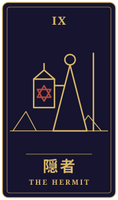

足もと
物語の手前に、ひとつの相談がありました。三枚のタロットをめぐるやりとりを、聞こえたままに書き留めています。
持ち込まれた相談
七十一歳、山あいの町で一人暮らしをしています。夫を亡くして十二年、名古屋にいる息子から、近くの高齢者向け住宅に移らないかと言われ、年内に返事をする約束です。坂の上の家は冬がつらく、息子の心配もありがたいのです。でも、公民館の星を見る会に通うのが今の私の楽しみで、今夜も流れ星を見に夜の河原へ行きます。世話役の方と並んで空を見上げる時間が、この町を離れたくない理由の半分だとは、息子にも友人にも言えません。この年で何を、と自分でも笑ってしまいます。息子の言う通りにするのが正しいのか、もう少しここで暮らしてよいのか、どう考えればいいでしょうか。
タロットの読み解き

過去
教皇・逆位置
教皇の逆位置が出ましたね。このカードは、昔からの決まりごとや、「こうあるべき」という形を表します。逆位置では、その形に気持ちがついていかず、どこか息苦しさを感じている様子を映すことがあります。
息子さんの「安全な住まい」という言葉も、それ自体は愛情でしょう。ただ、「この年なら」「普通は」と周りの常識に当てはめられるほど、ご自分の本当の思いが言えなくなっていくのかもしれません。

現在
隠者・正位置
隠者の正位置は、静かに自分と向き合い、真理を探す姿を表します。孤独という言葉がありますが、このカードの孤独は、寂しさではなく、自分の内側へ深く降りていく時間のことです。
夜の河原で、世話役の方と並んで星を見上げる時間は、まさにそうした内省の時間になっているのでしょう。この町を離れたくない理由が、景色だけでなく、そのひとときにもあるのだと、ご自分でよくご存じのようにお見受けします。笑ってしまうのは、それだけ大切にしている証拠かもしれませんよ。

未来
塔・逆位置
塔の逆位置は、急な崩れを避けようとして、かえって緊張が長く続く形を示すことがあります。年内の返事を先に延ばし続けると、心の中で張りつめたままの時間が続いてしまうかもしれません。
ただ、これは悪い結末を告げるものではありません。今の緊張を少し緩めて、ご自分の考えを言葉にしていくことで、状況は穏やかに動いていく余地があります。
最後に
このカードの流れを見ると、息子さんの心配も、星を見る楽しみも、どちらも本当のお気持ちなのだと感じます。どちらが正しいかを、占いで決めることはできません。
まずは、星を見る時間のことを息子さんに少しずつ話してみることや、高齢者向け住宅を実際に見学して、暮らしを想像してみることが、良い手がかりになるかもしれません。住まいのことは、地域包括支援センターなどの専門の窓口にも相談できますので、ご自分のペースで、納得のいく答えを探してくださいね。
帰り際の問い見ないようにしている綻びは、どこにあるか。
読み解きは、タロット占い「月夜のアルカナ」が、この相談と引かれた三枚から返したものです。小説は同じ三枚を、別の角度から描いています。相談者は物語のための架空の人物です。相談文・読み解き・短編本文は、いずれも生成AIを使って制作しています。
物語に戻る